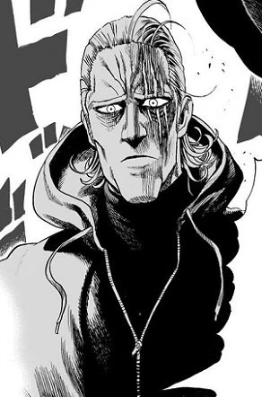

King é um herói considerado melhor amido de Saitama Classe S (Rank 7) em One Punch Man, reverenciado como "O Homem Mais Forte da Terra". Ele é um impostor que ganha crédito pelas vitórias de Saitama, sendo na verdade um civil medroso e gamer antisocial. Seu único "poder" real é uma sorte extrema e a intimidação causada pelo "Motor King".

Para saber mais sobre King, visite o site da Fandom